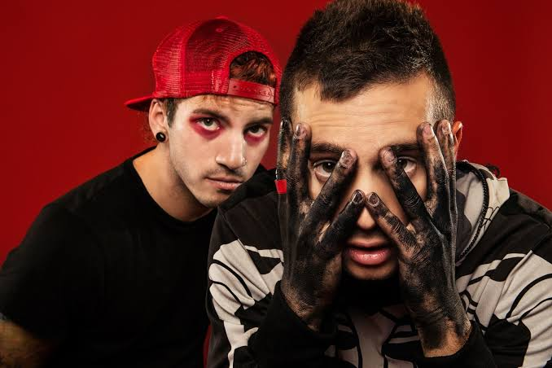

Twenty One Pilots was formed in 2009 in Columbus, Ohio by lead vocalist Tyler Joseph alongside former members. Today, the band consists of Tyler Joseph and drummer Josh Dun. They gained Ssuccess in the mid-2010s after years of independent releases, energetic live shows, and building a deeply dedicated fanbase known as the Skeleton Clique.
- Won a Grammy Award for Best Pop Duo/Group Performance for
"Stressed Out" in 2017.
- First artist to have every song on two consecutive albums
(Blurryface and Vessel) certified Gold or Platinum.
- Renowned for creating an interconnected conceptual storyline
across multiple album eras.